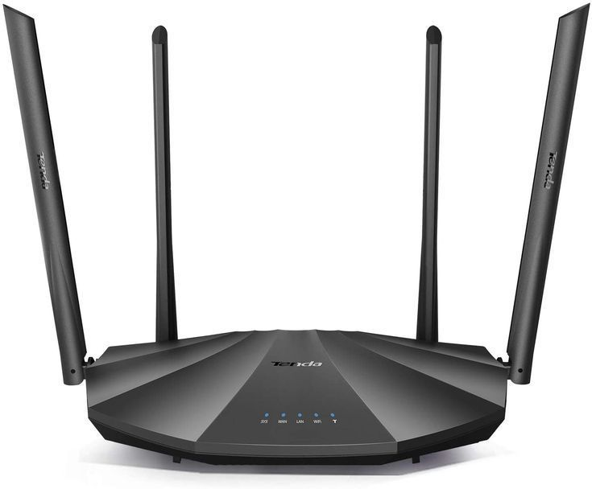

"Risman Network Banyuwangi adalah penyedia layanan Wifi terpercaya yang menghadirkan koneksi internet cepat dan stabil untuk mendukung kebutuhan digital masyarakat Banyuwangi."


Dual Band Router
Router dual band adalah router WIFI yang bekerja pada dua frekuensi, yaitu 2.4 GHz dan 5 GHz.
Frekuensi 2.4 GHz cocok untuk jangkauan luas, sedangkan 5 GHz lebih cepat dan stabil untuk aktivitas berat seperti streaming HD atau gaming online. Dengan router dual band, pengguna bisa memilih jaringan sesuai kebutuhan agar koneksi internet lebih optimal.

Tri-Band Router
Router tri-band adalah router WiFi yang bekerja pada tiga frekuensi sekaligus, yaitu satu 2.4 GHz dan dua band 5 GHz.
Kecepatan lalu lintas data sehingga perangkat bisa terhubung ke jaringan yang berbeda. Dengan router tri-band, koneksi internet menjadi lebih cepat, stabil, dan ideal untuk rumah atau kantor dengan banyak perangkat aktif secara bersamaan.

TP-Link Router
Router TP-Link dengan dua antena ini merupakan perangkat WiFi yang praktis dan ekonomis.
Cocok untuk kebutuhan internet rumah atau kantor kecil. Dengan desain sederhana namun elegan, router ini mampu menghadirkan koneksi nirkabel stabil untuk browsing, streaming ringan, maupun penggunaan perangkat sehari-hari.